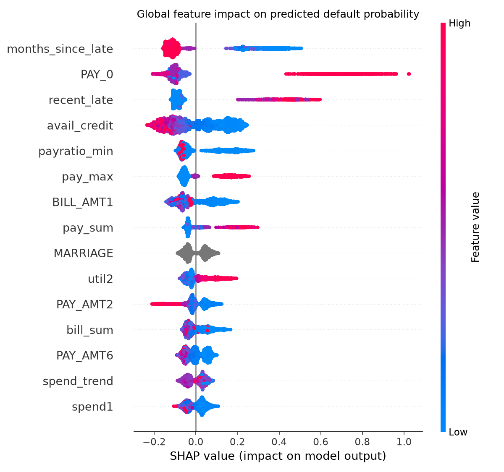
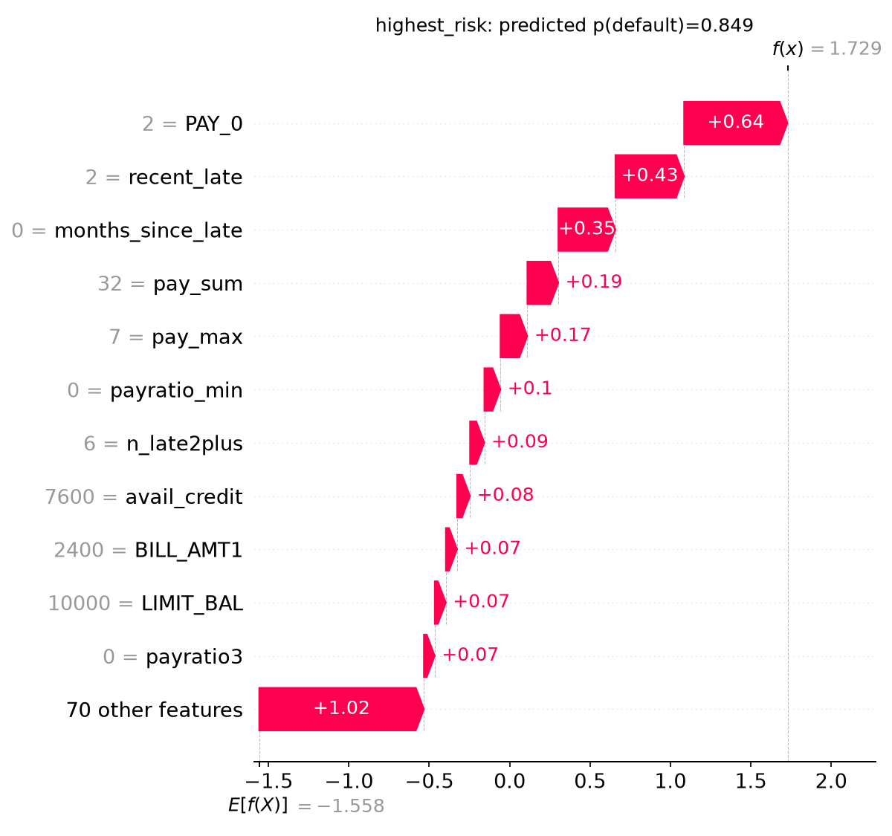
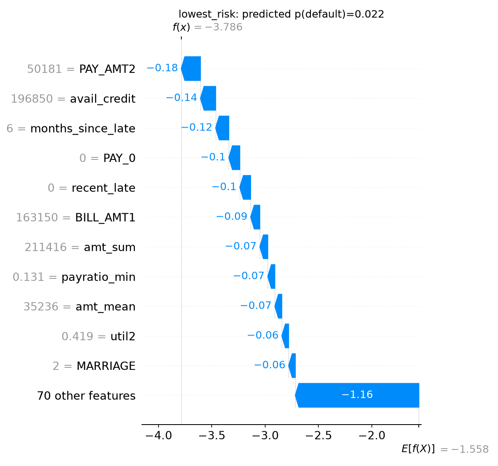
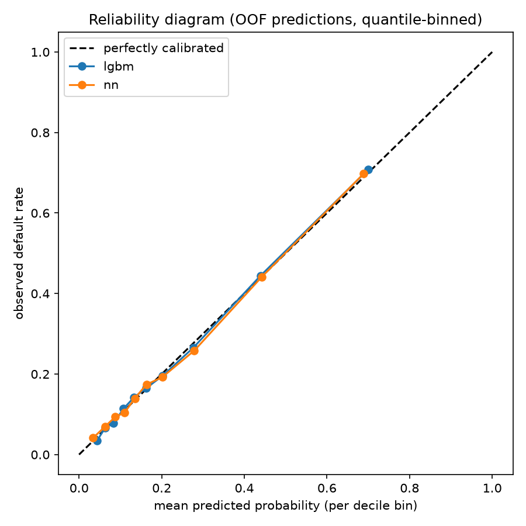

Methodology report · credit default prediction
What the model is, and how it came to be that
A weighted average of three models that read the same customers in three different ways: as aggregate statistics, as a six-month trajectory, and through a prior learned from synthetic data. Each earned its place by measurement; forty-one other candidates did not.
| Component | Weight | Solo OOF | Fits |
|---|---|---|---|
| LightGBM | 0.45 | 0.42211 | 90 + refit |
| GRU | 0.30 | 0.42392 | 150 + refit |
| TabPFN | 0.25 | 0.42345 | 30 + refit |
| Blended, out-of-foldweighted average of probabilities | 1.00 | 0.42136 | 281 |
| Hidden test6,000 rows, binary log loss | 0.40982 | ||
Pipeline
Every customer passes through the same five stages. The only branch is at modelling, where three learners see the same rows through different lenses.
EDUCATION 0/5/6 → 4, MARRIAGE 0 → 3.client_id, prob_default. No other post-processing.The three components, and what each one sees
The blend works because these disagree for reasons rather than at random. Each is given the same customers and derives a different kind of evidence from them.
LightGBM
the aggregate view · weight 0.45 · OOF 0.42211 · AUC 0.79104
Gradient-boosted decision trees. Each tree looks at where the trees before it were wrong and fits those leftover errors; hundreds of shallow trees accumulate into one prediction. It reads the 81 engineered features as a flat description of the customer — how often late, how much of the limit used, how well bills were covered.
It is deliberately small. Depth 4 with 12 leaves and heavy L2 regularisation beat every deeper configuration across 135 tested: the signal here is concentrated in recent repayment status, and larger trees memorise noise around it.
- Depth / leaves
- 4 / 12
- Learning rate
- 0.03
- Min leaf samples
- 100
- L2 penalty
- 30.0
- Feature fraction
- 0.5
- Fits averaged
- 90 + refit
GRU
the trajectory view · weight 0.30 · OOF 0.42392 · AUC 0.78942
A recurrent network that walks the six months in order, oldest to newest, carrying a memory it updates at each step. Learned gates decide what to retain and what to discard, so it can weigh a recent lapse more heavily than an old one.
It exists because the aggregates are lossy in one specific way. Two customers each late twice — one recovering, one deteriorating — share an identical n_late, pay_max and pay_mean. The flat features literally cannot separate them; reading the months in sequence can. Adding it displaced an earlier MLP entirely, dropping that model’s weight to zero.
- Architecture
- 2-layer bi-GRU
- Hidden state
- 32
- Input channels
- 8 × 6 months
- Dropout
- 0.4 / 0.15
- Loss
- BCE (= metric)
- Fits averaged
- 150 + refit
TabPFN
the borrowed prior · weight 0.25 · OOF 0.42345 · AUC 0.79091
A transformer pretrained by Prior Labs on millions of synthetic tabular datasets. It fits no parameters to our data at all: the training rows are supplied as context and it predicts by pattern-matching against a prior learned during pretraining — in-context learning, the mechanism behind large language models, applied to tables.
That makes it different in kind rather than in architecture, which is why it earned weight where seven other families did not. It matched our tuned GRU with zero tuning of its own. It is also the component with the heaviest external dependency: pretrained weights, a licence and an API token.
- Type
- pretrained, external
- Fitting on our data
- none
- Internal ensemble
- 4 estimators
- Context size
- 19,200 rows
- Class balancing
- off
- Fits averaged
- 30 + refit
How one prediction is actually computed
Take one real customer — late last month, late the month before, and carrying a balance close to their limit — and follow what each model does to turn that into a number between 0 and 1. Assumed here: you know what training data and features are. Everything past that is explained.
3.1 LightGBM: hundreds of small yes/no checklists, added together
A decision tree is a flowchart of yes/no questions ending in a verdict. This model builds hundreds of them, each deliberately short — four questions deep at most.
Where the questions come from
Nobody writes them. At each point in the tree the algorithm tries every feature at every sensible threshold — is PAY_0 above 0, above 1, above 2; is util_mean above 0.3, 0.4, 0.5 — and measures how much separating the customers that way would reduce its error. That measure is called the gain. It keeps the single best split, then repeats the search on each side. Our settings stop it at four questions deep, twelve leaves, and no leaf smaller than 100 customers.
Below is one actual first tree from a trained model, not an illustration. One number stands out: its first split scores a gain of 2,254, while the best split anywhere below it scores 248 — nine times smaller.
An important caveat before reading it. This is one tree out of 90 models × hundreds of trees each. Change the random seed or the fold and the tree changes. We checked how much: across 30 models, the very first split was PAY_0 ≤ 1.5 in 13 of them, months_since_late in 12, and the recent_late split shown below in only 5.
But notice what those competing splits all are: was the customer late last month, how recently were they late, how late on average recently. They are four ways of asking one question. Every one of the 30 models opens on recent lateness — it simply reaches for whichever measure of it happened to be available, since feature_fraction=0.5 means each tree only sees half the features. The individual tree is unstable; the pattern it finds is not.
recent_late <= 0.75? gain 2254 — were they late in the last two months?
├─ YES (mostly safe) → payratio_min ≤ 0.0001? gain 248
│ ├─ YES → bill_std ≤ 2736? → … 4 leaves, values −1.24 to −1.27
│ └─ NO → LIMIT_BAL ≤ 75,000? → … 4 leaves, values −1.26 to −1.28
└─ NO (recently late) → payratio2 ≤ 0.50? gain 130 — did they pay less
│ than half of that month's bill?
├─ YES → LEAF −1.1972 2,536 customers — the riskiest leaf
└─ NO → amt_over_limit ≤ 0.093? → 2 leaves −1.25 / −1.26
A real customer through the real model
Taking an actual customer from the validation fold: late two months running, using 100% of their limit, and having paid under 5% of a recent bill.
recent_late 2.0 payratio2 0.049 util_mean 1.00 start — the 22.1% base rate, in log-odds −1.2584 tree 1 recent_late>0.75 → payratio2≤0.5 → leaf −1.1972 tree 2 +0.0325 tree 3 +0.0571 trees 4–352, summed +1.6247 ────────────────────────────────────────────────────────── total log-odds +0.5172 converted to a probability 62.7% what actually happened they defaulted
Two things to notice. The first tree barely moves the needle — from −1.2584 to −1.1972, a nudge of 0.06 — because each tree’s influence is deliberately shrunk by the learning rate (0.03). The work is done collectively: 352 trees each contributing a fraction, accumulating to +1.78 in total.
The second tree then trains on what the first got wrong, the third on what the first two still miss, and so on. That is what “boosting” means, and it is why no single tree needs to be clever.
The model adds in log-odds rather than probabilities, because log-odds can be summed safely while probabilities cannot (two “+0.6” probabilities would exceed 1). One formula converts back at the end.
Reading trees responsibly. The customer above is traced through one real model, and its arithmetic is exact. A different seed would route them through different questions and produce a slightly different number — which is precisely why the final prediction averages 90 of these rather than trusting any one. Individual trees are for understanding the mechanism; only the average is the model.
Why keep the trees so short? Four questions deep means a tree can combine at most four facts about someone. That sounds limiting, but with only 24,000 customers a deeper tree starts carving out branches describing a handful of specific individuals rather than a real pattern. We tested 135 configurations; every deeper or less-constrained one scored worse.

months_since_late, PAY_0 and recent_late, which is the same “four ways of asking one question” that the 30 models opened on. Two spending-decomposition features reach the top fifteen.

3.2 GRU: forming an impression while reading the file month by month
LightGBM sees each customer as one row of summary numbers — how many times late, average utilisation. Those summaries throw away the order events happened in. The GRU is built to keep that order.
Think of a loan officer reading a customer’s file one month at a time, oldest page first, forming an impression as they go and revising it with each new page. That is close to literally what this model does.
What “an impression” means here
The model keeps a set of 32 numbers that it updates after every month. These aren’t anything a human named — they’re whatever the model found useful to track during training. One might end up representing something like “how recently things went wrong”, another “whether payments are shrinking”. We never specify them; they emerge from training. Collectively they’re the model’s running notes on this customer.
What happens at each month
Each month supplies 8 numbers: repayment status, whether they were late, the bill as a fraction of their limit, the payment as a fraction of their limit, log-scaled bill and payment amounts, the change in balance since last month, and how much of the previous bill the payment covered.
The model then makes two judgements, and this is the part that makes a GRU more than a running average:
- How much should this month change my view?A month that looks like the last one barely moves the notes. A sudden missed payment moves them a lot.
- How much of my earlier view still matters?If someone has clearly recovered, the model can let old trouble fade rather than holding it against them forever.
Both judgements are made by small formulas the model learned during training — nobody told it that recent months matter more, or that recovery should count. It worked that out from 24,000 customers’ outcomes.
Reading it twice
The model reads the six months forwards (oldest to newest) and then again backwards (newest to oldest), producing two sets of notes. Reading backwards lets it interpret an early month with knowledge of how things turned out — a missed payment in month 6 reads differently once you know months 1–3 were clean.
month 6 (oldest) notes ← blank, then updated by month 6 month 5 notes revised month 4, 3, 2 notes revised month 1 (newest) notes final → 32 numbers forwards read backwards → 32 numbers backwards ────────────────────────────────────────────────────────── those 64 + the 81 summary features → two small layers of arithmetic → 34.3%
The case for including it at all. Two customers were each late twice. One was late in months 5 and 6 and has paid cleanly since. The other paid cleanly until missing months 1 and 2. Their n_late, pay_max and pay_mean are exactly identical — LightGBM cannot tell them apart, because the summaries genuinely contain no difference. One is recovering and one is falling apart. Reading months in order separates them, and that is what earned this model 30% of the blend.
3.3 TabPFN: a model that was trained to learn, not trained on us
This one is unusual enough that “a pretrained model” undersells it. It never trains on our data — not one pass, not one adjustment to its internals. Two separate things have to happen for it to work, and only the first involves training.
Part one: what Prior Labs did, long before we showed up
They built a generator that invents fake datasets. Each starts with an invented cause-and-effect structure — imaginary variables influencing each other through randomly chosen relationships, with random noise thrown in — and produces a table of features and outcomes. The table describes nothing real. It’s a plausible-shaped dataset from an imaginary world.
They generated millions of these and trained a neural network on one repeated exercise: here are some rows with their answers, and one row without — what’s the answer? Then the dataset is thrown away and the next one is a completely different invented world with different variables and different rules.
Because no dataset ever appears twice, the network cannot memorise any of them. The only thing that helps it improve is getting better at the general skill: look at labelled examples, work out the pattern linking features to outcomes, apply it to a new row. After millions of rounds, that skill is what its internals encode.
Part two: what happens when we use it
We hand it our 19,200 training customers together with their known outcomes, plus the one customer we want predicted — all in a single pass. It compares that customer against all 19,200 labelled examples, works out which ones they resemble in the ways that turned out to matter, and produces a probability.
in: 19,200 customers + their known outcomes
+ 1 customer needing a prediction
↓ one pass through the network
out: 31.2%
Nothing about the network changes in the process. Swap in different training customers and its answer changes immediately — because the training data is an input to it, the way a question is an input, rather than something it absorbs and keeps.
Why this helps on a dataset our size. LightGBM and the GRU begin knowing nothing and must learn everything about credit risk from our 24,000 customers. TabPFN arrives already holding sensible general expectations about how tabular data behaves, absorbed from millions of synthetic worlds. It has less to learn from our limited rows — which is why it matched our fully-tuned GRU with no tuning whatsoever, and why the mistakes it makes differ from models that learned everything here. Different mistakes are exactly what makes an ensemble worth having.
What it costs. The trained network is external and licence-gated, it needs the entire training set handed to it every time it predicts, and it slows down as that set grows — about six minutes per fold here, against seconds for LightGBM.
How the three become one number
A plain weighted average of the three probabilities — no meta-model, no per-customer switching. Both of those were tested and were among the worst results recorded.
How the weights were chosen
Grid search here means exactly what it sounds like: try every combination and keep the best. Nothing is being fitted — three numbers are being looked up.
- Collect three prediction vectorsEach model produced a probability for all 24,000 training customers — crucially, from out-of-fold predictions, where every customer was scored by a model that never saw their label during training. Those numbers are honest stand-ins for unseen data.
- Enumerate the possibilitiesStep each weight in increments of 0.05, keeping only combinations summing to 1: (1.00, 0, 0), (0.95, 0.05, 0), (0.95, 0, 0.05) … about 230 valid triples in total.
- Score each oneFor a candidate like (0.5, 0.3, 0.2), compute the blended probability for all 24,000 customers and measure the log loss against the true outcomes. One number per candidate.
- Keep the lowest(0.45, 0.30, 0.25) scored 0.42136, the best of the 230.
| Weights (LGBM / GRU / TabPFN) | OOF log loss | Distance from best |
|---|---|---|
| (1.00, 0.00, 0.00) lgbm only | 0.42211 | |
| (0.65, 0.35, 0.00) no tabpfn | 0.42155 | |
| (0.55, 0.30, 0.15) | 0.42141 | |
| (0.45, 0.30, 0.25) selected | 0.42136 | |
| (0.34, 0.33, 0.33) equal weights | 0.42147 |
The flatness is the reassuring part. Notice how little separates those rows. Every weighting from 0.50 to 0.70 on LightGBM lands within 0.0001, so the optimum is a broad plateau rather than a sharp peak. A sharp peak would suggest the weights had latched onto noise in these particular 24,000 rows; a plateau means almost any sensible weighting performs the same, and the exact choice barely matters.
We tested that directly: shrinking the weights halfway toward equal — the standard remedy for weights overfitted to validation data — made the hidden-test score worse. That test was run at the two-model stage, where shrinking scored 0.41045 against 0.41032; the weight surface has remained just as flat since TabPFN joined, so the conclusion still holds for the three-way blend. The fitted weights needed no correction. This is also the one step in the pipeline where genuine selection happens, so it is where overfitting risk lives; the flat surface and the failed shrinkage test are the evidence that the risk did not materialise.
For a customer where LightGBM says 30%, the GRU says 20% and TabPFN says 25%, the submitted probability is 0.45×0.30 + 0.30×0.20 + 0.25×0.25 = 26%. The averaging is mathematically safe for this metric: log loss is convex, so by Jensen’s inequality the loss of an averaged prediction never exceeds the average of the individual losses.
Why nothing is calibrated afterwards
No calibration is applied, and that is a finding rather than an omission. Platt scaling, isotonic regression, per-segment calibration and base-rate shrinkage were each tested under nested cross-validation; all made log loss worse, and the shrinkage search independently selected α = 1.0, meaning “do not adjust”.

How we arrived here
Eight submissions, each building on the last. The two large gains came from different sources — one from information, one from a representation.
| Step | Change | Score | Gain |
|---|---|---|---|
| 1 | Log-loss alignment + GRU added to LightGBM | 0.41260 | baseline |
| 2 | Full-data refit for the GRU | 0.41237 | −0.00023 |
| 3 | Repeated cross-validation, 3 partitions | 0.41211 | −0.00026 |
| 4 | Repeated cross-validation, 6 partitions | 0.41211 | 0.00000 |
| 5 | Spending decomposition features + tuned GRU | 0.41038 | −0.00173 |
| 6 | Pure full-data refit for LightGBM | 0.41032 | −0.00006 |
| 7 | TabPFN added to the blend | 0.40995 | −0.00037 |
| 8 | TabPFN raised to 6 partitions + full-data refit | 0.40982 | −0.00013 |
The single largest gain came from an accounting identity. The data gives statement balances and payments but never the amount charged; since BILL_t = BILL_(t+1) − PAY_AMT_t + spend_t, monthly spending can be recovered. A balance rising because someone is spending is a different risk story from one rising because they stopped paying, and no existing feature could tell those apart.
The full sequence including the submission that regressed, and every experiment that never reached a submission, is in the experiment ledger.
What it does well, and where it is weak
Advantages
- Three genuinely different inductive biasesAggregate statistics, temporal sequence, and a pretrained prior. Diversity is structural rather than cosmetic — models that merely differed in algorithm (CatBoost, ExtraTrees, logistic regression) all received weight zero.
- Calibrated without post-processingProbabilities can be read as probabilities. Four independent calibration tests each concluded no adjustment was warranted, which matters for a lender setting its own risk thresholds.
- Low variance by construction270 cross-validated fits across six fold partitions, plus 11 full-data refits, stand behind each prediction. Averaging involves no parameter selection, so it cannot overfit — it is the one component of the design with a mathematical guarantee.
- Interpretable where it countsThe 45%-weight component is a tree model with SHAP attributions available per customer, so any individual decision can be explained by feature contribution.
- No fragile tricksNo pseudo-labelling, no rank transforms, no leaderboard-fitted post-processing. Every step was validated out-of-fold before being adopted.
Disadvantages
- Most of the value sits in one modelLightGBM alone reaches 0.42211 out-of-fold; all three together reach 0.42136. The other two components add roughly 0.0007 for 180 extra model fits and two additional dependencies. The ensemble is expensive relative to its marginal gain.
- TabPFN is a reproducibility liabilityIt needs a Prior Labs licence, an API token and a weights download, and takes ~50 minutes to run. Anyone reproducing this must clear those gates — a real cost for 0.2 of the blend.
- Blend weights are fitted to validation dataUnlike the averaging, weight selection is a genuine selection step and carries overfitting risk. Mitigated but not eliminated: the surface is flat, and shrinking toward uniform made the score worse, both of which suggest the fit is stable.
- Compute cost is substantialA full retrain is several hours, dominated by 150 GRU fits and TabPFN’s context-length scaling. Iteration is slow, which limited how many ideas could be tested near the deadline.
- Some of the target is unreachableThe twenty worst-predicted customers are all defaulters the model rated at 2–4% risk, every one with a spotless payment record. Whatever drove those defaults is absent from the data, and no model over these columns can recover it.
The honest summary of the ceiling. Forty-one experiments were run; four produced gains that survived. Seven model families, six feature families, 135 hyperparameter configurations, eight ensembling and calibration schemes, and five techniques borrowed from the winners of a larger credit-default competition all failed to improve on what is described here. Gains came only from deriving information the data did not already state, or from averaging more of the same models — never from a more sophisticated algorithm.
What we would try next, and why we stopped
Work stopped at the submission deadline, not at the point where ideas ran out. These are the specific things left on the table, with an honest estimate of what each was worth — recorded so the stopping point is a documented decision rather than an unexplained gap.
Ranked by expected value
1 TabPFN internal ensembling
TabPFN ran with n_estimators=4, its own internal ensembling parameter — the number of times it re-reads the data under different feature orderings and permutations before averaging. Raising it to 8 or 16 improves the quality of each fit, which is different from the repeated cross-validation we already exhausted (that averages more fits of the same quality). It is the only genuinely untested knob remaining on the winning configuration.
Why not done: the run at n_estimators=4 took 3h 10m. Doubling the parameter plausibly doubles that, and under 4 hours remained before the deadline — with no way to submit a partial result.
An avoidable cost: TabPFN was run on CPU. It was set that way on the first pilot to sidestep a possible incompatibility with Apple’s Metal backend, and never revisited. Tested afterwards, device="mps" works correctly and is faster even on a small subset (4.8s against 6.8s on 3,000 rows, with identical predictions to float precision). Since GPU advantage grows with batch size, the full run would plausibly have taken about an hour rather than three — which would have made this experiment affordable before the deadline. The constraint was a wrong assumption, not the hardware.
2 A GRU trained on more channels
The sequence model reads 8 channels per month. The spending-decomposition features that produced our largest single gain are supplied to it only as flattened static inputs, never as an ordered per-month trajectory. We tested exactly this and measured +0.00002 — but at 3 partitions rather than 6, and with the spending features already present as statics in both arms, so the test isolated only whether ordering helps. A cleaner design would compare against a GRU with no spending information at all.
Why not done: the measured effect was inside noise, and the cleaner experiment needs two full GRU runs at roughly 50 minutes each.
3 More TabPFN fold partitions
TabPFN carries 25% of the blend on 30 fold-fits, against LightGBM’s 90 and the GRU’s 150. It remains the least-averaged component, so it sits earliest on the variance-reduction curve where each doubling buys proportionally more.
Why not done: going 3→6 partitions moved out-of-fold log loss by 0.00002. The leaderboard gained 0.00013, but that came mostly from the full-data refit added in the same run — which now exists and cannot be added twice. A further doubling is another three hours for a likely smaller return.
Considered and rejected on evidence
- An eighth model familyTen were tried; three earned weight. The three that worked read the data differently — as aggregates, as a sequence, through a pretrained prior. Every model that was merely a different algorithm over the same view (CatBoost, ExtraTrees, logistic regression, an autoencoder, a 1D-CNN, a multi-task variant) received weight 0.00. We would need a genuinely fourth way of viewing a customer, and we could not name one.
- More feature engineeringSeven families tried, one worked. The one that worked recovered a quantity the dataset never states; the six that failed recombined or re-summarised information already present. Without a second such quantity to derive, more features means more noise.
- Anything calibration- or ensembling-relatedEight schemes tested, all worse than a plain weighted average. Three independent checks agree the probabilities need no adjustment. This avenue is closed rather than unexplored.
- Chasing the leaderboard furtherAt the point of stopping we sat 0.00015 behind first, having gained 0.00013 in the final round while the leader gained 0.00014. Continuing meant multi-hour runs for sub-0.0001 expected gains against a moving target, with the submission materials already complete.
The honest position at the deadline. None of the remaining ideas is worth more than roughly 0.0001 on the evidence available, and each costs hours. That is not a claim the model cannot be improved — the leader demonstrably has more — but the levers we can still name are exhausted, and the ones we would reach for next are the ones already measured as saturating. A better result would most likely require a genuinely new insight about the data rather than more of what is described in this document.